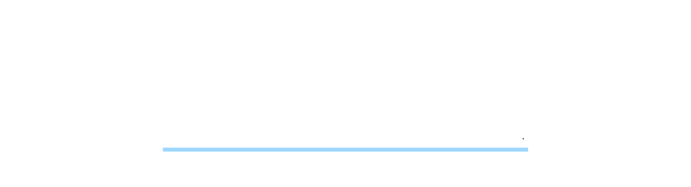

Un oso polar en la oscuridad absoluta. Arch Linux + Hyprland, negro puro, un solo acento de hielo, y una regla de oro: las actualizaciones jamás tocan tu configuración.
Qué es
Menos es más. Y lo tuyo es tuyo.
- dos capas
- default/ es nuestro y se reemplaza en cada update. user/ es tuyo y no se vuelve a tocar nunca. Atajos, monitores, alias: todo sobrevive.
- densidad estricta
- Gaps 0, bordes de 1 px, radio 0, barra de 24 px. Hielo #9fd8ff solo en la ventana con foco y el cursor.
- para programar e imprimir en 3D
- Neovim (LazyVim), Docker, mise y rustup, libvirt de serie. FreeCAD y OrcaSlicer. Bases de datos en contenedores, no nativas.
- en lua, sin magia
- Hyprland configurado en Lua nativo. Cada script del instalador hace una cosa y se entiende leyéndolo.
Instalar
Dos caminos, el mismo resultado.
Elige uno. A si no tienes nada instalado: la ISO lo hace todo. B si ya tienes un Arch limpio: un solo comando.
Desde la ISO de Nanuk
La ISO instala Arch y Nanuk en un solo paso. No hace falta saber nada de Arch. Solo UEFI.
- Descarga la ISO del último release y comprueba el
sha256. - Grábala en una USB y arranca desde ella en modo UEFI (ver cómo activarlo; es obligatorio).
- Responde las preguntas: teclado, idioma, usuario, disco. Puedes usar un disco entero o elegir partición por punto de montaje y conservar tu
/home. Cifrado opcional. - Reinicia. Splash del oso, autologin, Hyprland.
Grabar la USB (Linux)
$ sudo dd if=nanuk-*.iso of=/dev/sdX bs=4M status=progress oflag=sync
Sobre un Arch ya instalado, con curl
Nanuk se monta encima de un Arch limpio: sin escritorio, con un usuario normal que tenga sudo, e internet. Si ya lo tienes, salta al comando final.
Antes: instalar Arch limpio con archinstall
- Descarga la ISO oficial de archlinux.org, grábala en una USB y arranca en modo UEFI (cómo activarlo).
- Conecta a internet. Ethernet conecta sola. Para Wi-Fi usa
iwd, que ya viene en la ISO (guía completa en la wiki de Arch: iwd):# iwctl [iwd]# station wlan0 scan [iwd]# station wlan0 get-networks [iwd]# station wlan0 connect "nombre de tu red" [iwd]# exit # ping -c 2 archlinux.org
- Ejecuta
archinstally elige en cada apartado:- Disco "Best-effort default partition layout", ext4 o btrfs, disco entero.
- Cifrado opcional: "Disk encryption" con una contraseña. La pedirá en cada arranque; protege tus datos si pierdes el equipo.
- Bootloader Limine, el de Nanuk. También valen systemd-boot o GRUB.
- Usuario "User account": crea el tuyo y responde sí a superuser (sudo). La contraseña de root puede quedar vacía.
- Perfil Minimal. Sin escritorio: Nanuk trae el suyo.
- Audio No audio server. Nanuk instala PipeWire.
- Red "Use NetworkManager".
- Zona horaria la tuya, con NTP activado.
- Install, reinicia y saca la USB. Entras en una consola de texto: escribe tu usuario y contraseña.
Después: el comando
Ya dentro de tu Arch, con internet (ping -c 2 archlinux.org). Clona el repo y corre los pasos 01 a 07; tarda entre 15 y 40 minutos según la conexión.
$ curl -fsSL https://raw.githubusercontent.com/nestervear/nanuk/main/boot.sh | bash
¿Vienes de Omarchy? Hay migración en dos fases con vuelta atrás: desde-omarchy.md.
Arrancar la USB en modo UEFI
Nanuk usa Limine con una imagen UKI y solo arranca en UEFI. Vale para los dos caminos: la ISO de Nanuk y la de Arch. Si la computadora arranca la USB en modo BIOS o Legacy, verás "No bootable device" o un menú que no es el de Nanuk.
- Entra al firmware al encender: normalmente
F2,Supr,F10oEsc, según la marca (Dell y Lenovo:F2/F12; HP:Esc/F10; ASUS y MSI:Supr). - Modo UEFI: en "Boot", pon Boot Mode: UEFI y desactiva CSM o Legacy Boot si aparece.
- Secure Boot: desactivado. Las ISO de Arch y de Nanuk no están firmadas, y con Secure Boot activo la USB ni aparece.
- Elige la USB desde el menú de arranque (
F12,F11,F9oEsc): escoge la entrada que empieza por "UEFI:" seguida del nombre de tu USB. La misma USB sin ese prefijo es el modo Legacy y no sirve. - Si después de instalar la computadora arranca Windows o el sistema viejo, vuelve al firmware y sube "Nanuk" (o "UEFI OS") al primer lugar del orden de arranque.
En una máquina virtual es lo mismo: en virt-manager marca "Personalizar la configuración antes de instalar" y pon el firmware en UEFI (OVMF); una VM creada con BIOS no se puede cambiar, hay que crear otra.
Después, todo pasa por la CLI
$ nanuk install <paquete> # repo, AUR o flatpak, lo detecta solo $ nanuk update # sistema + defaults, sin tocar user/ $ nanuk bg next # siguiente fondo (o Super+Shift+B) $ nanuk menu # todo lo anterior sin recordar nada
Requisitos
| Mínimo | Recomendado | |
|---|---|---|
| Firmware | UEFI (Limine arranca una imagen UKI) | |
| CPU | x86_64 | con VT-x / AMD-V para las VMs |
| GPU | cualquiera con driver libre en Mesa (Intel, AMD) | NVIDIA: no probado |
| RAM | 4 GB | 8 GB; 16 GB con Docker, VMs y OrcaSlicer a la vez |
| Disco para / | 20 GB | 40 GB o más |
Capturas
Negro, blanco, hielo.
Documentación